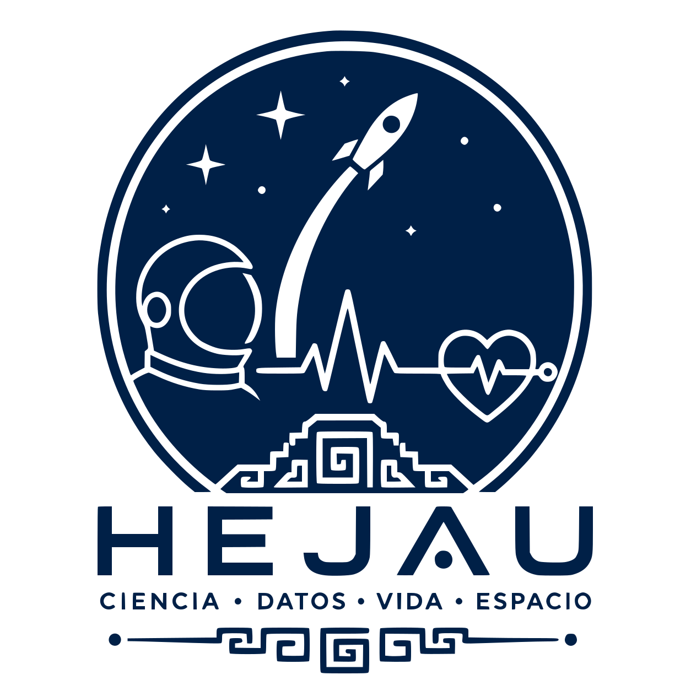

Medir
Registro pre-actividad de capacidad pulmonar (espirómetro de globo), oximetría de pulso y estado de ánimo.
Docentes de preparatoria se convierten en tripulación activa: miden su capacidad pulmonar y estado de ánimo antes y después de una rutina de ejercicio, y analizan los datos con un modelo predictivo de IA. Antes de medir, conocen a los Paynani y los Rarámuri, corredores mesoamericanos que ya resolvieron este reto.
Explorar el taller
¿Cómo se mantienen los astronautas física y mentalmente preparados durante misiones espaciales de larga duración? Este taller de 90 minutos propone una respuesta innovadora: aprender de dos culturas mesoamericanas que ya dominaron el desafío de la resistencia extrema y la resiliencia psicológica.
Los participantes —educadores de preparatoria— se convierten en tripulación activa de una misión. Miden su capacidad pulmonar y estado emocional antes y después de una actividad física estructurada, registrando los datos en un modelo de regresión lineal múltiple para analizar cómo el ejercicio influye en el bienestar emocional.
A través de dos casos históricos excepcionales —los Paynani, veloces mensajeros mexicas que transportaban hielo desde el Popocatépetl, y los Rarámuri, corredores de ultradistancia con una de las mayores resistencias aeróbicas del mundo— se explora cómo las culturas mesoamericanas lograron una preparación integral del ser humano para condiciones extremas.
Aporte principal: demostrar que la exploración espacial del futuro también requiere sabiduría ancestral: combinar ciencia de vanguardia con prácticas culturales que han demostrado su eficacia para desarrollar resistencia física, mental y colectiva en entornos hostiles.
Taller práctico de 90 minutos, presencial, para docentes de preparatoria (K9–12).
Registro pre-actividad de capacidad pulmonar (espirómetro de globo), oximetría de pulso y estado de ánimo.
Rutina de ejercicio estructurada, inspirada en el legado físico de los Paynani y los Rarámuri.
Registro post-actividad y análisis de los datos con un modelo predictivo de IA vía la app Gradio.
Los datos de capacidad pulmonar y estado de ánimo, recolectados antes y después de la rutina de ejercicio, se analizan con un modelo de regresión lineal múltiple que estima la relación entre actividad física y bienestar emocional.
El simulador funciona como una app Gradio accesible por código QR, sin necesidad de instalación, para que cada participante capture y visualice sus propios datos en tiempo real.
Abrir simuladorEl Programa de Investigación Humana (HRP) de la NASA identifica la salud conductual y el rendimiento como uno de los cinco principales riesgos para las misiones de larga duración. Para misiones a Marte —que implican entre 18 y 36 meses de aislamiento, latencias de comunicación de hasta 24 minutos y la imposibilidad de evacuación médica— la estabilidad psicológica de la tripulación es una variable de misión crítica.
| Variable de misión NASA | Referente mesoamericano |
|---|---|
| Aptitud física y función pulmonar (HRP / Artemis) | Paynani: corredores que subían al Popocatépetl (5,426 m) en hipoxia real para abastecer a Tenochtitlan. Rarámuri: capacidad aeróbica documentada equivalente a atletas de élite. |
| Salud conductual en confinamiento (HRP / riesgo SANS) | Cosmogonía náhuatl: percepción cíclica de la vida y la muerte como marco para sostener la intención y el propósito en condiciones de riesgo extremo. |
| Cohesión de tripulación e identidad colectiva (HRP / Behavioral Health) | Escudo de crew: la identidad de misión como ancla psicológica. Tradición heráldica y simbólica mesoamericana aplicada a la pertenencia grupal en el espacio. |
Protocolo pre/post y guía bilingüe (inglés/español) del taller.
Material de apoyo para la sesión de 90 minutos.
App de toma de datos en Hugging Face Spaces.
Plantilla de escudo de crew y hoja HRP de la NASA.
Nombre del taller: Signos Vitales de Misión: Medir la Capacidad Pulmonar y el Estado de Ánimo para Entrenarse como Astronauta.
jalapenhio@gmail.com · +52 951 195 1743 · Querétaro, México
ORCID: 0009-0003-9758-9826
Educador STEM e investigador doctoral en el CONALEP Roberto Ruiz Obregón, donde diseña e implementa experiencias de aprendizaje STEAM que integran herramientas de IA, modelado predictivo, historia y cosmovisión mesoamericana. Su investigación doctoral se centra en las condiciones pedagógicas que median el uso de la IA generativa en el diseño instruccional y la agencia epistémica en educación técnica. Participante del programa NASA SEEC 2026.
evcomolo11@gmail.com · +52 442 270 4132 · Querétaro, México
Docente de informática, ciencia de datos e inteligencia artificial en el CONALEP Roberto Ruiz Obregón. Se especializa en el diseño e implementación de proyectos tecnológicos y educativos innovadores. Licenciada en informática, con Maestría en Ciencias de la Computación y actualmente cursa una Maestría en Ciencia de Datos e Inteligencia Artificial. Ha participado en programas internacionales de la NASA en Space Center Houston.
julian.cjcc@gmail.com · +52 963 229 8943 · Chiapas, México
Docente de educación Telesecundaria en Bella Vista, Chiapas. Enfocado en proyectos STEAM en zonas indígenas de la Sierra Madre de Chiapas, bajo el lema «ciencia con identidad». Director de ExpoCiencias Chiapas Frontera Sur y coordinador de los proyectos HUMITO y Misión Rinconada. Su participación en SEEC 2026 representa un referente clave en su trayectoria profesional.
Docente universitario e investigador especializado en educación STEM, robótica educativa e innovación tecnológica. Diseña experiencias de aprendizaje basadas en proyectos que integran robótica, programación, impresión 3D, drones e inteligencia artificial. Ingeniero en Aeronáutica, con Maestría en Enseñanza de las Ciencias. Participó en el programa NASA SEEC 2026.
alejandra.smile2@gmail.com · +593 990 918 158 · Colta, Chimborazo, Ecuador
Mujer indígena del pueblo Puruhá. Ingeniera Mecánica graduada de la Escuela Superior Politécnica de Chimborazo (ESPOCH), con Maestría en Ingeniería Civil. Ha representado a Ecuador en el SEEC en las ediciones 2024 y 2026, dedicando su labor a acercar la ciencia y la exploración espacial a niñas, niños y jóvenes de comunidades indígenas.